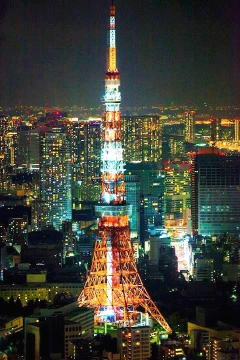

Токийската кула е телевизионна и радиотелекомуникационна кула в парка Шиба, Минато-Ку, Токио, Япония. Построена е през 1958 г. Тя символизира възстановяването на страната след унищожението на Втората световна война. Висока е 333 м (1093 фута), което я нарежда сред най-високите само носещи стоманени кули в света. Кулата тежи четири хиляди тона. Има решетъчна структура и в съответствие с авиационните норми за безопасност е оцветена в оранжев и бял цвят. Дизайнът на кулата е разработен от инженерната компания Nikken Sekkey и главния архитект Татю Наито. Благодарение на тях телевизионната и радио-кула беше устойчива на сериозни земетресения и тайфуни. Кулата е построена с усилията на няколкостотин японски строители.
Тя влиза в списъка на 29-те най-високи обекти на Световната федерация на високи кули, където заема 13-то място. Разходите за осветление ù са около 24 000 йени на ден. Токийската Кула е била най-високата кула в Япония до завършването на Tokyo Skytree през 2012 г.
Комбинирайки разглеждане на забележителности и упражнения чрез изкачване на открито стълбище до главната палуба на кулата, за да се стигне до площадката за наблюдение, кулата привлича вниманието на множество туристи. Най-много посетители е имало на 30 март 1960 г. - 40 000 души. Въпреки, че цялата идея за катерене на толкова много стълби звучи сложна и изморителна, на практика е интересно. От по-високите части на кулата се вижда прекрасна гледка на града през стъкления под.
През юни 2013 г. кулата става регистрирано материално културно имущество на страната. Въпреки факта, че Токийската телевизионна кула е построена преди повече от половин век, тя все още се счита за модерна забележителност.
Туристическата зона е на първите четири етажа. В нея са отворени различни магазини и ресторанти, от които можеш да си закупиш сувенир като например фигурки наподобяващи забележителността, тениски, картини и плакати, чаши, магнити, ключодържатели и др.
“Гледката е невероятна особено през нощта, когато светлините на града светят” – споделят хора посетили кулата
Работно време: от 10:30 до 20:00
